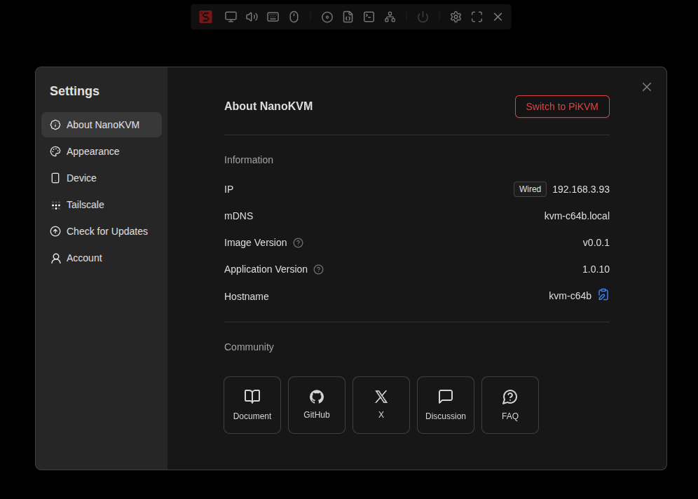
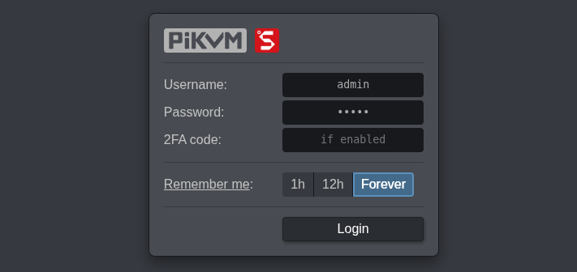
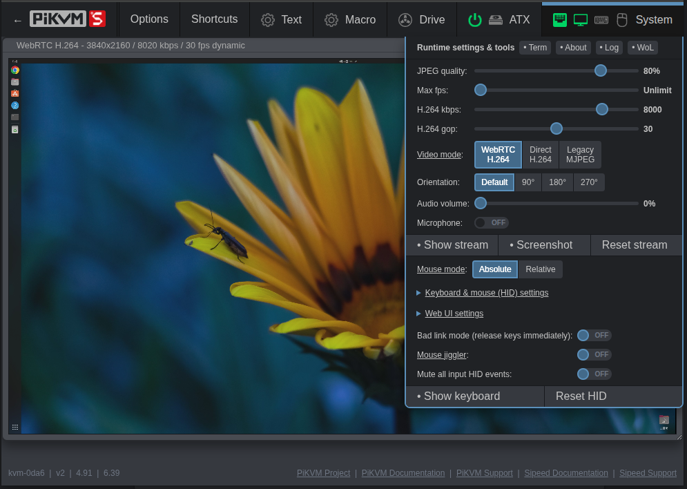
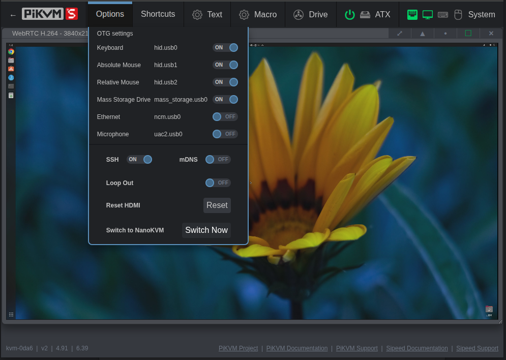
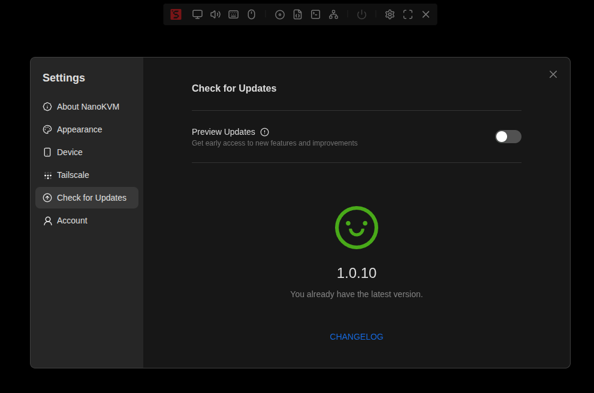
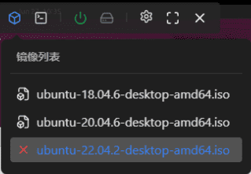
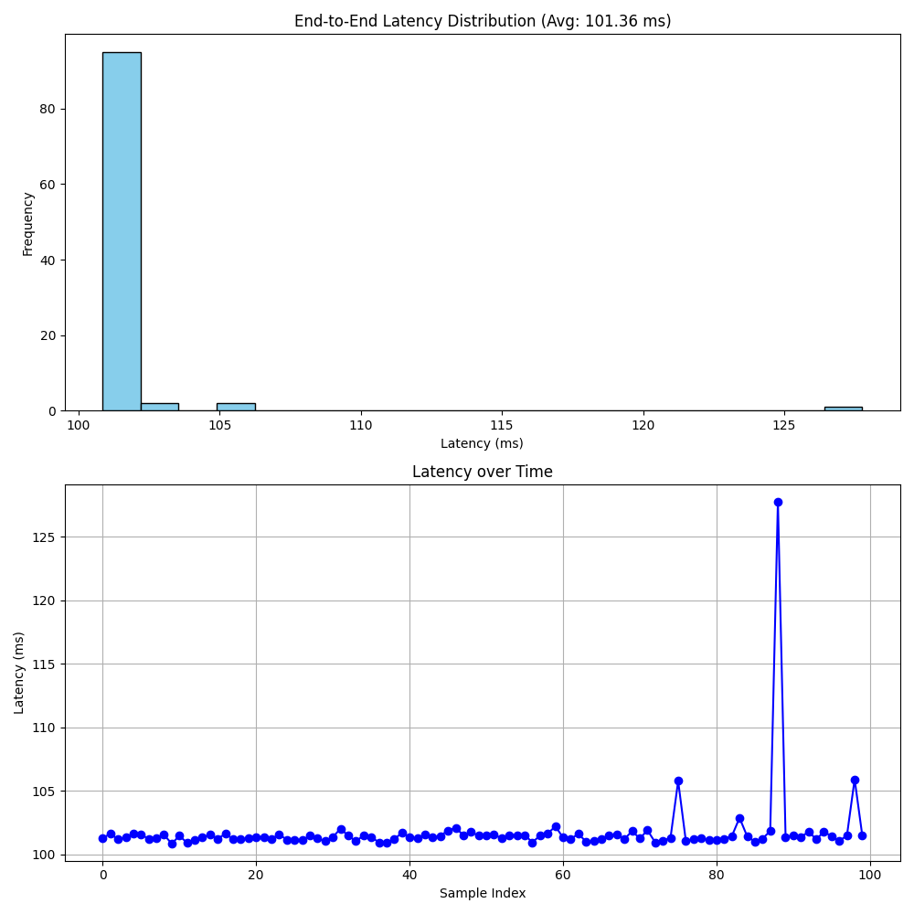

English
EnglishAdvanced Applications
Update history
| Date | Version | Author | Update content |
|---|---|---|---|
| 2025-9-11 | v0.2 | iawak9lkm |
|
| 2025-8-26 | v0.1 | BuGu |
|
System Framework Switching
In addition to running the NanoKVM framework, NanoKVM Pro is fully compatible with the PiKVM software framework. You can flexibly switch between them based on your usage requirements.
Switching from NanoKVM to PiKVM
NanoKVM Pro ships with the NanoKVM framework by default. Follow these steps to switch:
Navigate to
Settings→About→Switch Device
After clicking the switch button, the system will automatically restart and boot into the PiKVM framework (takes approximately 30 seconds). If it doesn't switch automatically after a long time, please manually refresh the webpage

The default account and password under the PiKVM framework are also
admin/admin
Important Notes:
- The two platforms manage accounts and passwords independently and do not synchronize. It is strongly recommended to change the default password immediately after logging in
- Some features under the PiKVM framework need to be implemented through the web terminal, such as WiFi configuration, Tailscale configuration, etc.
- When the NanoKVM system updates, the PiKVM framework will also be updated synchronously
PiKVM Password Management
PiKVM currently does not support password modification through the web UI. You need to execute the following commands via SSH or the web terminal:
# Change Linux system user password
passwd root
# Change KVM login password
kvmd-htpasswd set admin
# User management commands
kvmd-htpasswd add <user> # Add new user and set password
kvmd-htpasswd list # Display user list
kvmd-htpasswd del <user> # Delete user
For more usage methods, please refer to PiKVM Official Documentation - Authentication.
Configuring WiFi Network
PiKVM currently does not support WiFi configuration through the web UI and LCD screen. You can choose one of the following methods:
Method 1: Switch to NanoKVM Framework for Configuration (Recommended)
- After switching to the NanoKVM framework, use the web interface or LCD screen to configure WiFi, then switch back to the PiKVM framework
Method 2: Command Line Configuration
- Execute the following commands via SSH or web terminal:
# Connect to open network (no password)
/kvmcomm/scripts/wifi.sh connect_start <SSID>
# Connect to encrypted network (requires password)
/kvmcomm/scripts/wifi.sh connect_start <SSID> <PASSWORD>
# Disconnect WiFi connection
/kvmcomm/scripts/wifi.sh connect_stop
Configuring Tailscale Network
PiKVM currently does not support Tailscale configuration through the web UI. Please use the NanoKVM framework to configure Tailscale, then switch back to the PiKVM framework.
Switching from PiKVM Back to NanoKVM
Switching from the PiKVM system back to NanoKVM is equally simple:
Navigate to
Options→Switch to NanoKVMClick the
Switch Nowbutton
The system will automatically restart and boot into the NanoKVM framework (takes approximately 30 seconds). If it doesn't switch automatically after a long time, please manually refresh the webpage
More Features
For more features, please refer to the PiKVM Official Documentation.
SSH & mDNS
SSH
By default, NanoKVM-Pro disables SSH to ensure system security. If you need to enable the SSH service or use it when previewing new versions, you can turn it on as follows:
- ATX/Desk: From the web interface, go to
Settings→Device→ enableSSH - Desk: From the screen, tap
Settings→SSHto enableSSH
The default account is root with the password sipeed. If you change the web account password in the NanoKVM interface, the SSH password will be updated accordingly.
mDNS
To enable or disable mDNS, use the following methods:
- ATX/Desk: From the web interface, go to
Settings→Device→ enable/disablemDNS - Desk: From the screen, tap
Settings→mDNSto enable/disablemDNS
HDMI Input & Loop Out
Currently, configuration is only supported on the Desk version’s screen.
Support for ATX/Desk web interface will be added soon.
If HDMI functionality is not required, you can disable it to reduce power consumption. Operation:
On Desk: From the screen, tap Settings → HDMI to enter the HDMI configuration page, which has two options:
- INPUT: When disabled, Desk stops capturing HDMI input signals.
- LOOP OUT: When disabled, Desk stops outputting HDMI loop-out signals.
Display Adjustment
ATX
Currently, the OLED screen supports the following function:
- Short press the
USRbutton to toggle the OLED display on or off.
Desk
The LCD screen supports the following functions (all configured from the screen):
Adjust backlight brightness:
Settings→BrightnessStandby clock:
Settings→Auto Clock- When disabled, the LCD remains always on.
- When enabled, the LCD switches to a clock display after a long period of inactivity.
Factory Reset
Quick Reset
ATX: Long press the
USRbutton until the screen showsReset, then release.Requires version ≥
1.0.13Desk: From the screen, tap
Settings→Helpto enter the Help page. Repeatedly tap the reset button until0appears, and the device enters recovery mode.
Note: Do not perform any other operations until the device has fully restarted and refreshed the screen.
Deep Reset
For details, see the FAQ section on Image Burning Methods.
HDMI Secondary Display
Since NanoKVM-Pro can emulate a display, capture screen content, and features a small built-in screen, it can function as an HDMI secondary display.
In the UI, simply select HDMI as the video output source to display the captured video feed on the small screen.
When used as a desktop accessory, this feature can serve as a:
- Mini secondary monitor
- System performance monitor
- Video thumbnail player
and more.

USB Expansion Features
USB NCM
The NCM function allows the NanoKVM to simulate a USB network card, enabling users to log in directly via USB. To enable:
- ATX/Desk: From the web interface, go to
Settings→Device→ enableVirtual Network - Desk: From the screen, tap
Settings→USB→ enableNCM
USB Secondary Display
Supported only on NanoKVM-Desk
Currently, the USB secondary display function is supported only on Windows systems.
Download and extract the USB secondary display driver.
On Desk: From the screen, tap
Settings→USBto enter the USB configuration page, then enablePanel.On the controlled PC:
Open
Device Manager→Other devicesFind
NanoKVMPro→ right-clickProperties→Driver→Update driverChoose
Browse my computer for drivers→Let me pick from a list of available drivers on my computerDouble-click
Show all devicesUnder
Standard USB Host Controller/Standard system devices, locateUSB Composite Device→ double-click to install
Note: Driver locations may vary depending on Windows version. Please search carefully.
After installation, a new
loop input to outputdevice will appear underOther devicesin Device Manager.Right-click this device →
Update driver→Browse my computer for drivers→Browse→ select the USB secondary display driver folder →Next→ follow the prompts to complete installation.Once installed, a new NanoKVM graphics device will appear under
Display adapters.On Desk, enter the secondary display page from the screen, select USB, and the Desk will function as a USB secondary display.
To disable, refer to step 2 to turn off
Panel.When re-enabling, some systems may require reinstalling the USB driver.
Updates
NanoKVM Pro will periodically push new application versions that include new features and bug fixes. You can update the application version in Settings -> Check for Updates.

After clicking download, the new application installation package will be automatically downloaded, which includes kvmcomm_x.x.x_arm64.deb, nanokvmpro_x.x.x_arm64.deb, and pikvm_x.x.x_arm64.deb:
kvmcomm_x.x.x_arm64.debis responsible for driving the shared hardware in the NanoKVM and PiKVM frameworks;nanokvmpro_x.x.x_arm64.debis the NanoKVM application software;pikvm_x.x.x_arm64.debis the PiKVM application software.
Enabling the preview update feature will allow you to access the latest experimental application, which usually includes updated features but may lack stability. It is recommended to enable SSH before downloading preview updates.
You can also download specific versions and install them manually.
# Taking download of version 1.1.6 as an example
# Download file
sudo curl -L https://cdn.sipeed.com/nanokvm/preview/nanokvm_pro_1.1.6.tar.gz | sudo tar -xz
# Enter folder
cd nanokvm_pro_1.1.6
# Install deb packages
sudo apt install ./*.deb
Software version 1.1.5 and later underwent an architectural adjustment. Older NanoKVM-Pro units can only fetch up to version 1.1.5 initially; after updating, they will be able to retrieve the latest versions.
How to Use TF Card for Storage Expansion
The NanoKVM-Desk version features a TF card slot on the rear panel. Inserting a TF card expands the storage capacity and enables the Virtual U Disk function.
The TF card is mounted by default under the NanoKVM system's /sdcard directory. When Virtual U Disk is enabled, the TF card is simultaneously mounted as a mass storage device through the USB composite interface, allowing file transfer to the controlled host via this feature.
Note:
The ATX version cannot expose the TF card slot due to bracket size constraints.
The first batch of Desk versions does not support TF card hot-plugging. Please insert the TF card when the device is powered off.
The Virtual U Disk and image mounting functions cannot be enabled simultaneously.
How to Perform Remote OS Installation
In addition to simulating keyboard and mouse devices, the USB-C port of NanoKVM Pro also emulates a USB drive device. This can be used to mount specified ISO files for tasks like OS installation. ISO files can be uploaded to the NanoKVM-Pro, which offers approximately 21GB of available space.
Unlike a regular USB drive, NanoKVM's virtual USB drive can store multiple ISO files simultaneously. Before powering on the target host, you can select which system ISO to mount via the options on the web interface.
After connecting the remote host and Nano KVM as described in the previous steps, log into the system via your browser. Click the CD-ROM icon and select the target system ISO to mount it.

Next, begin the OS installation process. Click Power On (Short Press), then quickly press the F11 key (the key may vary for different hosts; please refer to your host's manual). Select the corresponding bootable ISO to start and complete the installation.

Note:
- All uploaded ISO files are stored in the
/datadirectory of the NanoKVM-Pro. Users can directly read and write this partition from within the NanoKVM terminal. - If you encounter issues mounting the ISO, try ejecting the ISO from the host first, then click to mount it again.
How to Set a Static IP
NanoKVM-Pro introduced static IP configuration for Ethernet cards in version 1.1.6 and above. You can assign a static IP by configuring the /boot/eth.nodhcp file. The detailed setup method is as follows:
Create a file named /boot/eth.nodhcp in NanoKVM-Pro, then edit it according to the following rules:
- Each line represents a custom IP in the format:
addr/netid gw[optional]; - Multiple static IPs can be preset across multiple lines.
Simplified steps:
# Perform the following operations in the NanoKVM-Pro web terminal or SSH terminal
# Create the /boot/eth.nodhcp file and write the configuration
echo "192.168.2.2/22" > /boot/eth.nodhcp
During system startup, the static IP address list in the
/boot/eth.nodhcpfile will be read. The setup process is as follows:
- Sequential detection: The system reads the IPs in the file line by line and checks whether each one is already in use by another device on the network.
- Detection mechanism:
arpingis used for detection first; ifarpingis not installed in the system, it automatically falls back to using thepingcommand.- Set available IP: Once the first available (unused) IP is found, the system immediately sets it as the static address for the device, and the process terminates.
- Fallback option: If all IPs in the list are occupied, the system will attempt to obtain an IP automatically via DHCP.
- Guaranteed address: If DHCP also fails to assign an address (for example, if there is no DHCP server on the network), the system will use the fixed guaranteed address
192.168.90.1.
How to Use Serial Port
NanoKVM Pro provides two sets of available serial ports: UART1/UART2. (Note: The ATX version, limited by the standard bracket size, does not have these ports externally exposed; only the internal solder pads are retained.)
The interface definition diagram for the Desk version is as follows:

- Using the Serial Terminal via the Web Interface
Requires firmware version 1.1.5 or higher
Navigate to: Web Menu Bar -> Terminal -> Serial Terminal. Here, you can configure the serial port number, baud rate, and other options.

- Send serial commands only:
# Set ttyS1 to 115200 baud rate
stty -F /dev/ttyS1 115200
# Send hexadecimal data 0x11, 0x22, 0x33
echo -n -e '\x11\x22\x33' > /dev/ttyS1
How to Modify EDID
EDID (Extended Display Identification Data) is a set of data provided by a display device to the host, including device information, resolution and frame rate lists, color characteristics, audio capabilities, etc. The host adjusts the display settings based on the received EDID.
NanoKVM Pro supports modifying the EDID exposed by the virtual display. You can clone the EDID from a monitor or write your own EDID to achieve specific screen ratios, refresh rates, or color characteristics.
Modifying the EDID may risk improper display functionality. Please proceed with caution. If issues arise, restore the default EDID.
Writing method:
# 1. Prepare the EDID file, typically 256 bytes, and scp it to the system
ls -l /root/customize.bin
# -rw-r--r-- 1 1000 1000 256 Aug 19 14:44 /root/customize.bin
# 2. Write the EDID
cat /root/customize.bin > /proc/lt6911_info/edid
# 3. Restore the default EDID:
cat /kvmcomm/edid/e18.bin > /proc/lt6911_info/edid
Version 1.2.0 comes with six built-in EDIDs. Below is the list of supported resolutions and their maximum frame rates for each EDID:
| Resolution | Aspect Ratio | 3840×2160@30Hz | 3840×2160@39Hz | 2560×1440@60Hz | 1920×1080@60Hz | 3840×2400@30Hz | 3440×1440@60Hz |
|---|---|---|---|---|---|---|---|
| 3840×2400 | 16:10 | × | × | × | × | 30 FPS | × |
| 3840×2160 | 16:9 | 30 FPS | 39 FPS | × | × | 30 FPS | 30 FPS |
| 3840×1600 | 21:9 | × | × | × | × | × | 50 FPS |
| 3440×1440 | 21:9 | × | × | × | × | × | 60 FPS |
| 2560×1440 | 16:9 | 83 FPS | 83 FPS | 83 FPS | × | 60 FPS | 60 FPS |
| 2560×1080 | 21:9 | × | × | × | × | × | 75 FPS |
| 1920×1200 | 16:10 | 60 FPS | 60 FPS | 60 FPS | × | 60 FPS | × |
| 1920×1080 | 16:9 | 120 FPS | 125 FPS | 60 FPS | 60 FPS | 60 FPS | 60 FPS |
| 1680×1050 | 16:10 | 60 FPS | 60 FPS | 60 FPS | 60 FPS | 60 FPS | 60 FPS |
| 1440×900 | 16:10 | 60 FPS | 60 FPS | 60 FPS | 60 FPS | 60 FPS | 60 FPS |
| 1280×1024 | 5:4 | 60 FPS | 60 FPS | 60 FPS | 60 FPS | 60 FPS | 60 FPS |
| 1280×960 | 4:3 | 60 FPS | 60 FPS | 60 FPS | 60 FPS | 60 FPS | 60 FPS |
| 1280×800 | 16:10 | 60 FPS | 60 FPS | 60 FPS | 60 FPS | 60 FPS | 60 FPS |
| 1280×720 | 16:9 | 120 FPS | 120 FPS | 60 FPS | 60 FPS | 60 FPS | 60 FPS |
| 1152×864 | 4:3 | 60 FPS | 60 FPS | 60 FPS | 60 FPS | 60 FPS | 60 FPS |
| 1024×768 | 4:3 | 60 FPS | 60 FPS | 60 FPS | 60 FPS | 60 FPS | 60 FPS |
| 800×600 | 4:3 | 120 FPS | 120 FPS | 60 FPS | 60 FPS | 60 FPS | 60 FPS |
Resolutions not listed in this table may experience display errors or fail to display.
Lower resolutions might have compatibility issues, resulting in no display or screen flickering.
How to Retrieve Display EDID
Windows
Follow the steps below to export EDID data from the Windows registry.
Press Win + R to open the Run dialog, type
regedit, and press Enter.In the Registry Editor, navigate to:
HKEY_LOCAL_MACHINE\SYSTEM\CurrentControlSet\Enum\DISPLAY- Locate the EDID entry for your monitor. The typical path format is:
<VendorID>_<Model>\<InstanceID>\Device Parameters\EDIDTake note of the full path, especially
<VendorID>_<Model>and<InstanceID>.- Create a new file named
edid.ps1and paste the following content:
$regPath = "HKLM:\SYSTEM\CurrentControlSet\Enum\DISPLAY\<ID>\<InstanceID>\Device Parameters" $edid = (Get-ItemProperty -Path $regPath -Name EDID).EDID [IO.File]::WriteAllBytes("C:\Users\Public\edid.bin", $edid) Write-Host "EDID exported to C:\Users\Public\edid.bin"Replace
<ID>and<InstanceID>with the actual values for your display.Save the file, then right-click it and select Run with PowerShell.
If execution is blocked:
Open PowerShell as Administrator.
Run the following command and confirm:
Set-ExecutionPolicy RemoteSigned- After successful execution, the EDID binary file will be available at:
C:\Users\Public\edid.bin
Linux
On Linux systems using DRM (Direct Rendering Manager), EDID can be read directly from sysfs.# Replace <card> with the actual DRM card name, such as card0 or card1 sudo cat /sys/class/drm/<card>/edid > ~/edid.binIf the file exists and the command completes successfully,
edid.binwill be created in your home directory.macOS
On macOS, EDID data can be retrieved from the I/O Registry.- Open Terminal and run:
ioreg -lw0 | grep -i EDID- Look for a line similar to:
"EDID" = <00ffffffffffff00...>The hexadecimal string inside
< >represents the EDID data.Copy the full hexadecimal string inside the angle brackets (do not include the brackets themselves). Assume the copied string is
xxx.Convert the hexadecimal EDID string to a binary file:
echo "xxx" | xxd -r -p > ~/edid.bin- If the command succeeds,
edid.binwill be created in your home directory.
PowerShell Failure Cases and Troubleshooting
If exporting EDID on Windows fails, check the following common issues:
- Insufficient permissions
Ensure PowerShell is running with administrator privileges.
- Script execution policy restrictions
Check the current policy with:
Get-ExecutionPolicyIf needed, temporarily allow local scripts:
Set-ExecutionPolicy RemoteSigned- Incorrect registry path
Verify that the subkeys under
DISPLAYand the instance ID exactly match the path used in$regPath.- Missing EDID property
Some displays, virtual displays, or remote desktop sessions may not expose EDID. Perform the operation on a physical display connected locally.
- File write failure
Ensure
C:\Users\Public\is writable, or modify the script to use another writable directory.
How to Modify USB Information
Versions 1.2.0 and above support customizing USB information. The method is as follows:
# Modify PID
echo "0xXXXX" > /boot/usb.pid
# Modify VID
echo "0xXXXX" > /boot/usb.vid
# Modify Manufacturer
echo "XXXX" > /boot/usb.manufacturer
# Modify Product Name
echo "XXXX" > /boot/usb.product
# Apply changes
/kvmapp/scripts/usbdev.sh restart
How to Share Network via USB Network Adapter
Version 1.2.11 and above supports network sharing through USB network adapter, allowing the controlled host to access the network where NanoKVM-Pro is located via USB connection.
# Enable USB network adapter (choose one: NCM mode or RNDIS mode)
touch /boot/usb.ncm
# touch /boot/usb.rndis
# Set network adapter IP address
# (optional, defaults to a fixed IP generated using device ID)
echo "10.10.10.1/24" > /boot/ncm.ipv4
# Set DNS server address (optional, defaults to 8.8.8.8, 8.8.4.4)
echo "8.8.8.8 8.8.4.4" > /boot/ncm.dns
# Set traffic forwarding interface
# (eth0 for wired network, wlan0 for wireless network)
echo "eth0" > /boot/ncm.forward
# Restart USB network adapter to apply changes
/kvmapp/scripts/usbdev.sh restart
How to Use with the Host Application
The NanoKVM-Pro host application needs to be installed and run on the controlled PC. It provides additional functionality and a smoother user experience.
It is recommended to install the precompiled Release version directly. The host application is still under development, and the source code will be open-sourced later for manual compilation.
After installation, launch the application and enter the local network IP address of the NanoKVM Pro you want to pair with. The application runs in the background and can be closed via a right-click on the system tray icon.
Key Features
Automatically hide the controlled PC cursor for better remote control experience
When the host application is connected to NanoKVM Pro, the cursor on the controlled PC is hidden.
After the host application disconnects from NanoKVM Pro for a while, the cursor will reappear.
Collect CPU and memory usage of the controlled PC and transmit it to NanoKVM Pro
- In the Desk version, you can view the controlled PC status in real-time via the Host Info page.
About Latency
NanoKVM-Pro has made significant improvements in latency, with end-to-end latency controlled at around 100ms at any resolution.
The latency mentioned by other competitors is not end-to-end latency, but one-way latency. The actual end-to-end latency is much higher than what they claim.
Actual tests show that choosing different frame rates has little impact on end-to-end latency, meaning the latency for 1080P120 and 1080P30 is almost the same.
| Video Mode | End-to-End Latency |
|---|---|
| Direct H264 | 100ms |
| WebRTC H264 | 100ms |
| MJPEG | 100~150ms |
Note: We use "end-to-end" latency to reflect the actual latency perceived by users:
The delay from when a user moves the mouse in the local browser window to when the remote desktop mouse starts moving in the browser.
You can use this Python script to actually measure the "end-to-end" latency. Maximize the browser window or place it on the left side, ensuring the current remote desktop background color has maximum contrast with the mouse pointer color (for example, use a white background for a black pointer, or a black background for a white pointer).
python lat_mouse.py TEST_CNT RECORD_NAME
4K30 webrtc end-to-end latency record:
